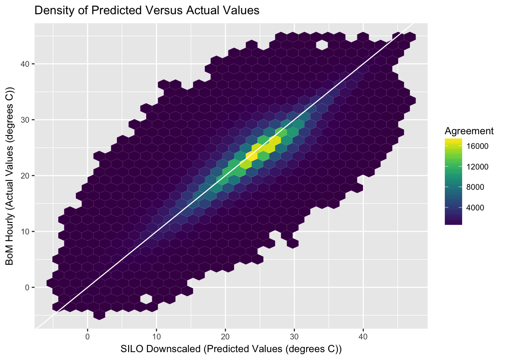

About
WINS is an R-package constructed as a part of GovHack 2016.
The WINS project (formerly called John Conner) was initiated by the Toowoomba Trio to tackle a major and growing problem faced by QLD vegetable growers. This challenge is identifying and responding to heat stress in their crops. High temperatures can cause considerable stress to crops, reducing yields and the quality of the produce grown. However, if the stress is identified early enough remedial action can be taken to minimise the damage and save the crop. The WINS project provides a timely warning system for farmers when a heat stress event has likely occurred. Please watch our YouTube video describing the WINS Project. The WINS project is built in the R environment, an open source statistical programing environment. It utilises the QLD SILO patch point weather data, available from the QLD government data portal, and models hourly data using a temperature from chillR. This downscaling is validated against the Bureau of Meteorology (BoM) hourly temperature data set, an official #GovHack 2016 data set, to show that there is good agreement between the modelled hourly data and the observed BoM data.
Quick Start
To install this R package and recreate what we’ve done this weekend for Govhack2016. Install the package and check out our vignette that details how to recreate what we’ve done.
if (!require("devtools")) {
install.packages("devtools", repos = "http://cran.rstudio.com/")
library("devtools")
}
devtools::install_github("ToowoombaTrio/WINS")
library("WINS")Perform temporal downscaling and data checks and comparison
# Downscale the data
BoM_SILO_data <- downscale()
# Check against BoM data
plot_density(BoM_SILO_data)
Meta
If you find bugs or other issues, please report them to us using https://github.com/ToowoombaTrio/WINS/issues.
Please note that this project is released with a Contributor Code of Conduct. By participating in this project you agree to abide by its terms.